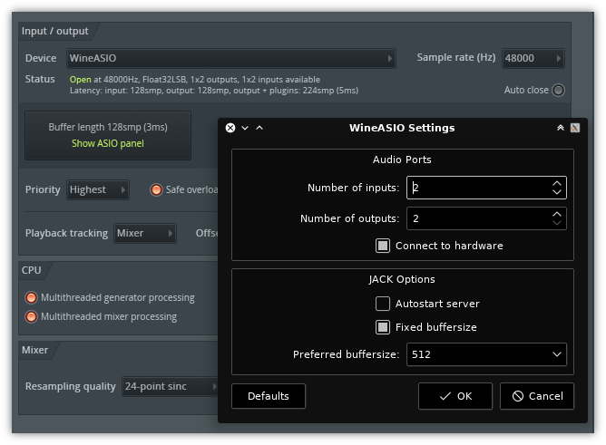

PipeASIO
An ASIO driver for Wine that talks to PipeWire directly — no libjack.so.0 runtime dependency.
Why PipeASIO?
A fork of WineASIO, rebuilt to be PipeWire-native so it loads where upstream can't.
ASIO is the low-latency audio driver model Windows DAWs use — FL Studio, Ableton Live, Reaper. Running them under Wine/Proton means the host needs an ASIO driver on the Linux side.
Upstream WineASIO links against JACK and dlopens libjack.so.0 at runtime. Inside the Steam Runtime steamrt4 container that Proton uses, that library isn't present — only libpipewire-0.3 is — so upstream segfaults on load. PipeASIO drops the JACK bridge entirely and speaks to PipeWire directly, so it loads cleanly inside Proton / Faugus and on any modern PipeWire desktop.
It also carries its own COM identity (CLSID {2D3CA9E2-…}, registered under HKCU\Software\ASIO\PipeASIO, DLL pipeasio64.dll), so it installs alongside WineASIO without either overriding the other — hosts see two separate drivers.
What you get
A focused, modern ASIO ↔ PipeWire bridge with a native settings panel.
PipeWire-native
Talks to libpipewire-0.3 directly via a pw_filter DSP node — no JACK, no libjack.so.0 at runtime.
Runs under Proton
Loads inside the Steam Runtime steamrt4 container (FL Studio under Faugus / Proton-CachyOS) via a host WINEDLLPATH.
Sample-accurate clock
Locks the PipeWire graph quantum to the host's negotiated buffer size with PW_KEY_NODE_FORCE_QUANTUM for tight, glitch-free timing.
Qt6 settings panel
A native pipeasio-settings GUI: channels, buffer size, device routing, plus a live Monitor tab with quantum, rate, xruns and a DSP-load graph.
Bluetooth-friendly
A follow-device-clock mode lets the target device drive the cycle — required for Bluetooth sinks whose clock is the radio link.
Live config reload
The driver re-reads its INI while running, so saving in the panel applies within about a second — no reselecting the driver or restarting the host.
The settings panel
Configure channels and routing, then watch the graph live.

Quick start
x86_64 only. Needs CMake ≥ 3.20, the Wine SDK, pkg-config, libpipewire-0.3-dev, and (for the panel) qt6-base-dev.
# clone and build (Release)
git clone https://github.com/M0n7y5/pipeasio.git && cd pipeasio
cmake -B build -DCMAKE_BUILD_TYPE=Release
cmake --build build
# user-local — required for Proton / Faugus / Steam cmake --install build --prefix "$HOME/.local" # …or system-wide for a normal Wine setup sudo cmake --install build --prefix /usr
env WINEPREFIX="$HOME/Faugus/<game>" pipeasio-register
Proton runs Wine in a container that can't see /usr/lib/wine, so install under $HOME (above) and point Proton's Wine at the ELF half by setting this in your launcher's per-game environment:
WINEDLLPATH=/home/<you>/.local/lib/wine
Use the absolute path (Faugus doesn't expand ~). Then pick PipeASIO as the ASIO device inside your host. Full details — including the config keys and their environment overrides — are in the README.
Configuration
A flat INI at ~/.config/pipeasio/config.ini (written by the panel); every key also has an environment-variable override. Defaults work out of the box.
| Key | Default | What it does |
|---|---|---|
inputs / outputs | 2 / 2 | Number of PipeWire ports the driver opens. |
buffer_size | 1024 | Preferred ASIO buffer size (power of two, 16–8192). |
fixed_buffer_size | on | Lock the size, or let the host change PipeWire's quantum. |
sample_rate | follow | 0 follows the graph; non-zero pins the rate. |
auto_connect | on | Auto-wire channels to a hardware device on start. |
follow_device_clock | off | Let the target device drive the cycle (needed for Bluetooth). |